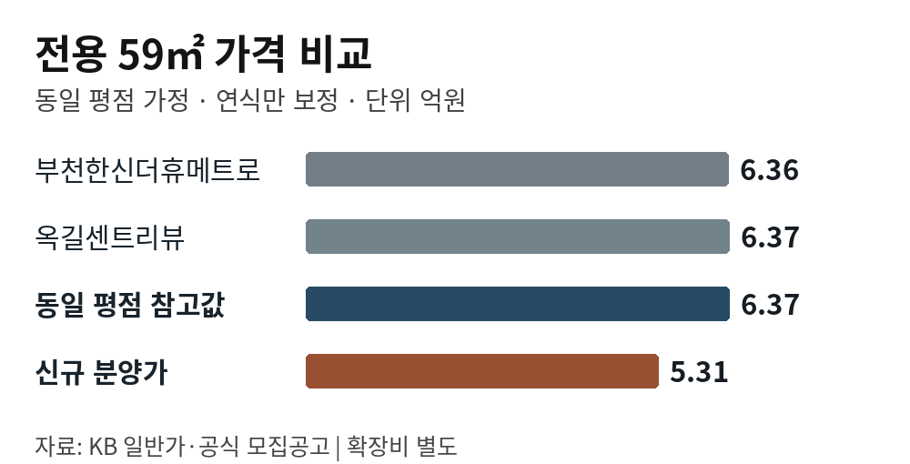
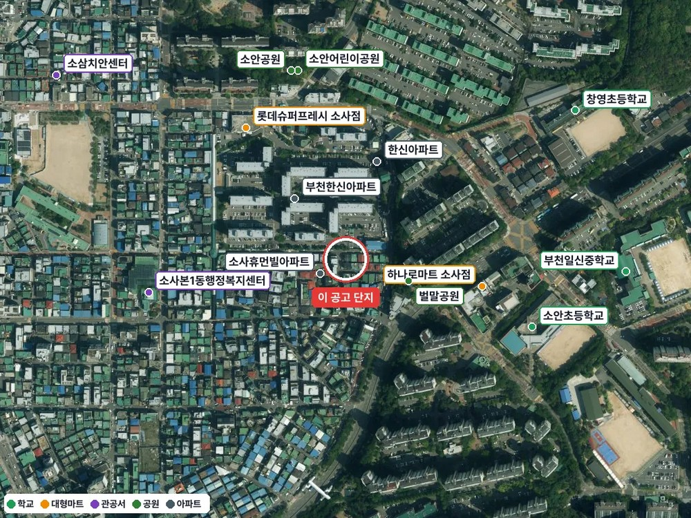

소사 휴먼빌 | 59㎡ 평균 5.31억·84㎡ 7.51억, 청약 일정
1. 핵심 요약
부천 소사본동 소사 휴먼빌은 79세대 중 45세대를 공급합니다. 전용 59㎡ 24세대의 가중평균 분양가는 약 5.31억 원이며 1순위 접수는 12월 1일입니다.
| 가격 항목 | 전용 59㎡ |
|---|---|
| 가중평균 분양가 | 5.31억 원 · 확장비 별도 |
| 브동산 모형 적정가 | 평점 확정 전 보류 |
| 예상 프리미엄 | 평점 확정 전 보류 |
| 참고 · 동일 평점 가정 | 6.37억 원 · 분양가 대비 약 +1.06억 원 |
| 비교단지 후보 | 전용면적·KB 일반가 |
|---|---|
| 부천한신더휴메트로 | 59.9715㎡ · 5.975억 |
| 옥길센트리뷰 | 59.9700㎡ · 5.875억 |
| 부천소사역푸르지오 | 59.9241㎡ · 7.30억 |
| 후보 | 선정·제외 근거 |
|---|---|
| 부천한신더휴메트로 | 2020.04 준공 · 299세대. 같은 소사본동의 준공 비교 후보. 소규모 주상복합이다. |
| 옥길센트리뷰 | 2017.12 준공 · 1,318세대. 같은 소사구 옥길동의 준공 대단지. |
| 부천소사역푸르지오 | 2012.11 준공 · 797세대. 같은 전용면적의 역 생활권 대단지. 2016년 준공 기준에는 미달한다. |
| 단지 | 입지 / 40 | 브랜드 / 20 | 상품성 / 40 |
|---|---|---|---|
| 신규 단지 | 보류 | 보류 | 보류 |
| 부천한신더휴메트로 | 보류 | 보류 | 보류 |
| 옥길센트리뷰 | 보류 | 보류 | 보류 |
| 단지 | 상품성 확인 자료 |
|---|---|
| 신규 단지 | 79세대 · 1개 동, 공고상 주차 102면 |
| 부천한신더휴메트로 | 299세대 · 같은 소사본동 주상복합 |
| 옥길센트리뷰 | 1,318세대 · 옥길동 준공 대단지 |
| 비교단지 | KB 일반가 | 연식 차이·배율 | 연식만 보정 |
|---|---|---|---|
| 부천한신더휴메트로 | 5.975억 | 97개월 · ×1.0647 | 6.361억 |
| 옥길센트리뷰 | 5.875억 | 125개월 · ×1.0850 | 6.374억 |

조회일은 2026.11.20입니다. 브동산 모형은 입지 40·브랜드 20·상품성 40점을 적용합니다. 기준가에 ±20% 한도의 평점 차이 보정과 연식 보정을 차례로 적용한 뒤 두 가격을 평균합니다. 표와 차트의 6.37억 원은 두 비교단지와 평점이 같다고 가정하고 연식만 보정한 참고값입니다. 입지와 상품성의 세부 확인이 남아 실제 모형 적정가와 예상 프리미엄은 보류합니다.
2. 입지 분석
소사본동의 1개 동 가로주택정비사업이다. 소새울역·소안초 주변의 보행 동선과 경사, 출입구 위치는 현장에서 확인할 만하다. 분양 공고의 주소는 277-30번지이며, 앞선 기관추천 사전안내에 기재된 지번과 다르다.
3. 상품 분석
| 항목 | 공고 내용 |
|---|---|
| 위치 | 경기도 부천시 소사구 소사본동 277-30번지 일원 |
| 전체 규모 | 지하 2층·지상 20층, 1개 동 79세대 |
| 이번 공급 | 45세대 · 특별 23 / 일반 22 |
| 시공 | 일신건영 |
| 입주 예정 | 2028년 5월 |
| 납부 비율 | 10% / 60% / 30% |
59㎡는 24세대로 가장 많고 84㎡는 21세대다. 59A·59B가 21세대다. 주차는 공고상 근린생활시설 1면을 포함해 102면이다. 같은 주택형이어도 호실에 따라 금액이 달라진다.

| 타입 | 공급 | 범위(만원) | 평균(만원) |
|---|---|---|---|
| 59A | 9 | 50,216~55,932 | 52,578 |
| 59B | 12 | 50,843~54,986 | 53,434 |
| 59C | 2 | 55,051 | 55,051 |
| 59D | 1 | 49,355 | 49,355 |
| 84A | 10 | 69,563~78,256 | 74,950 |
| 84B | 10 | 69,608~78,308 | 74,907 |
| 84C | 1 | 78,848 | 78,848 |
층 또는 호실별 공급금액에 해당 세대수를 곱해 합한 뒤 총세대수로 나눴다. 발코니 확장비는 59㎡ 1,430만 원 · 84㎡ 1,760만 원이며 유상옵션과 함께 공급금액과 별도다.
4. 공급 분석
부천시 거주자 우선. 경기·서울·인천 거주자는 기타지역으로 신청한다. 공고상 전매제한은 당첨자 발표일부터 1년이다.
| 청약 단계 | 날짜 |
|---|---|
| 모집공고 | 11월 20일 |
| 특별공급 | 11월 30일 |
| 1순위 | 12월 1일 |
| 2순위 | 12월 2일 |
| 당첨자 발표 | 12월 8일 |
| 서류접수 | 12월 9~11일 |
| 계약 | 12월 21~23일 |
| 단지·공고 시점 | 대표 면적·최고 공급가 |
|---|---|
| 중동역 다채로움 더원 2026.09.10 | 59B 6억 1,000만 원 발코니 확장비 별도 |
5. 결론
소형 단지인 만큼 소사본동의 역 접근성뿐 아니라 주차·주동 배치와 호실별 공급금액의 차이를 함께 확인할 만하다.
청약홈 모집공고 PDF · 사업주체 분양 홈페이지 · 공고번호 2026000591 · 2026년 11월 20일 확인.
전용 84㎡ 21세대의 호실별 분양가 평균은 약 7억 5,115만 원이다.
출처 · 청약홈 모집공고 2026000591 · 위치 참고 자료